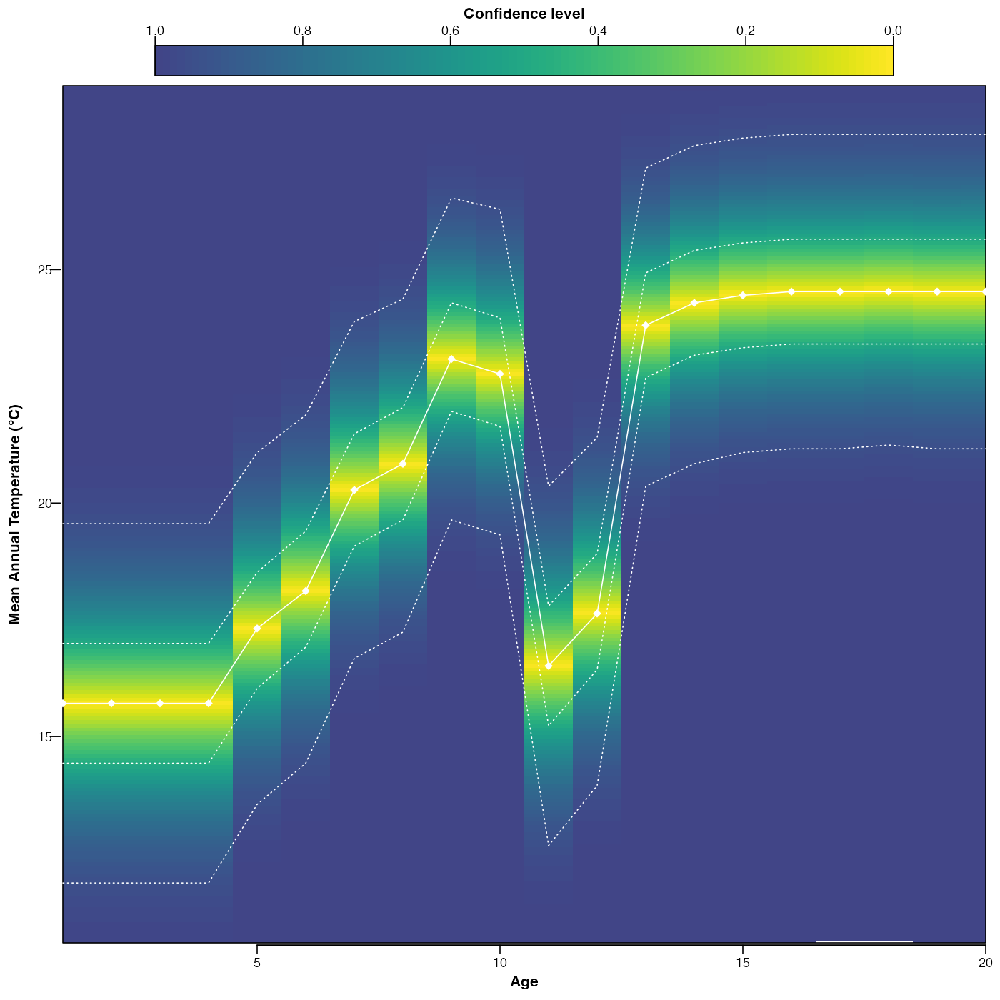

Plot the reconstructions.
plot.crestObj.RdPlot the reconstructions and their uncertainties if they exist.
# S3 method for crestObj plot( x, climate = x$parameters$climate, uncertainties = x$parameters$uncertainties, optima = TRUE, add_modern = FALSE, simplify = FALSE, xlim = NA, ylim = NA, save = FALSE, width = 5.51, height = 5.51, filename = "Reconstruction.pdf", ... )
Arguments
| x | A |
|---|---|
| climate | The climate variables to plot (default is all the reconstructed variables from x) |
| uncertainties | A (vector of) threshold value(s) indicating the error bars that should be calculated (default are the values stored in x). |
| optima | A boolean to indicate whether to plot the optimum ( |
| add_modern | Adds the modern climate values to the plot. |
| simplify | A boolean to indicate if the full distribution of uncertainties
should be plooted ( |
| xlim | the x limits (x1, x2) of the plot. Note that The default value, |
| ylim | the y limits of the plot. |
| save | A boolean to indicate if the diagram shoud be saved as a pdf file.
Default is |
| width, height | The dimensions of the pdf file (default 5.51in ~14cm). |
| filename | An absolute or relative path that indicates where the diagram
should be saved. Also used to specify the name of the file. Default:
the file is saved in the working directory under the name
|
| ... | other graphical parameters (see |
Examples
if (FALSE) { data(crest_ex) data(crest_ex_pse) data(crest_ex_selection) recons <- crest( df = crest_ex, pse = crest_ex_pse, taxaType = 0, climate = c("bio1", "bio12"), bin_width = c(2, 20), shape = c("normal", "lognormal"), selectedTaxa = crest_ex_selection, dbname = "crest_example" ) recons <- loo(recons) } ## example using pre-saved reconstruction obtained with the previous command. data(recons) plot(recons)